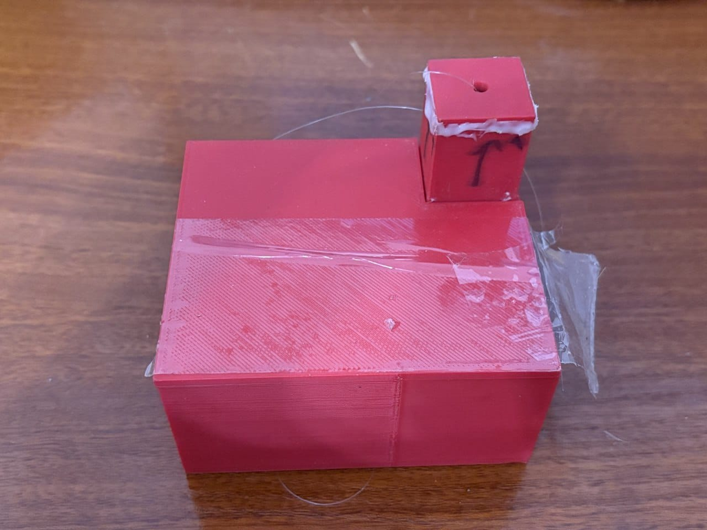
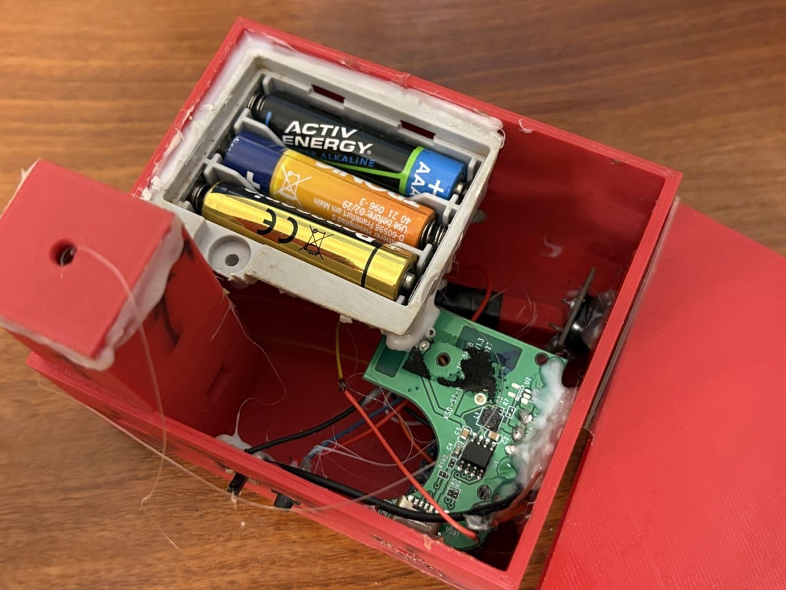
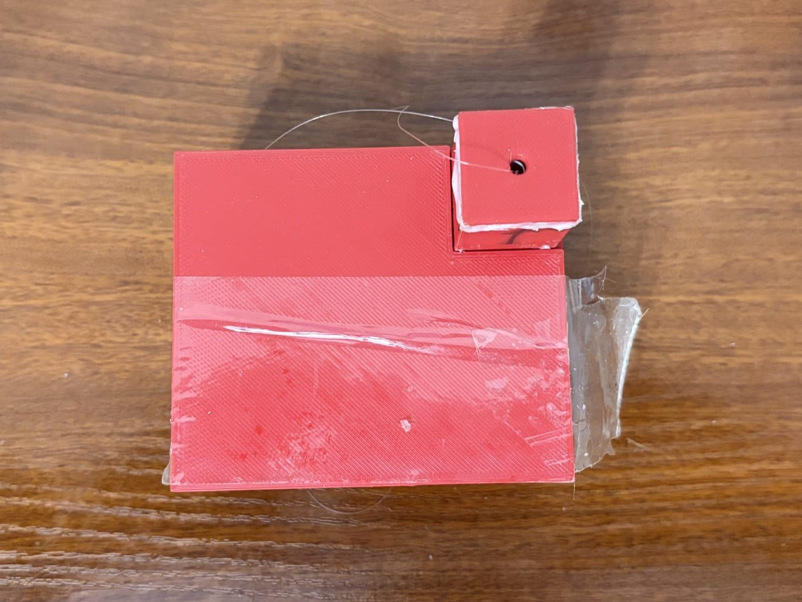
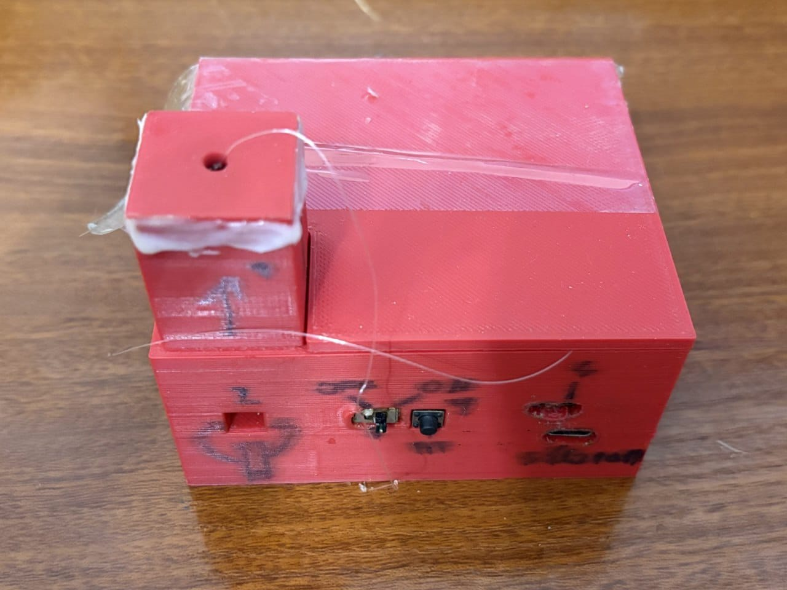
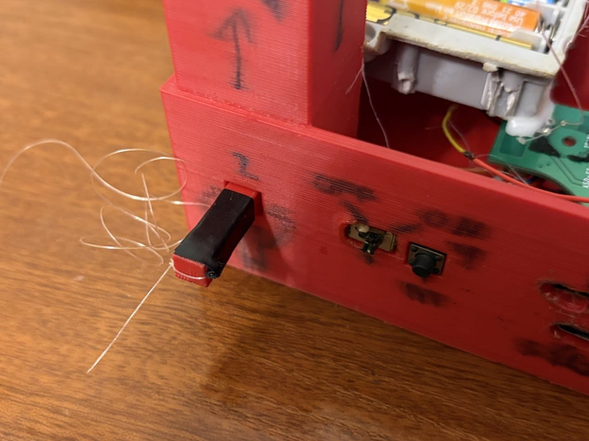

✓ Плюсы
- Механическое срабатывание при вытаскивании предохранителя.
- Устройство можно заранее активировать.
- Есть два варианта питания.
Сигнализация в 3D-печатном корпусе, которая реагирует на вытаскивание предохранителя.


Перед использованием сигнализация активируется кнопкой. Когда за леску вытаскивают предохранитель, пружина выпрямляется, цилиндр нажимает кнопку, Arduino получает сигнал и включает зуммер.
Сигнализация
Arduino
Собран
Начало 2025
Батарейки или внешний источник
Зуммер через бустер


